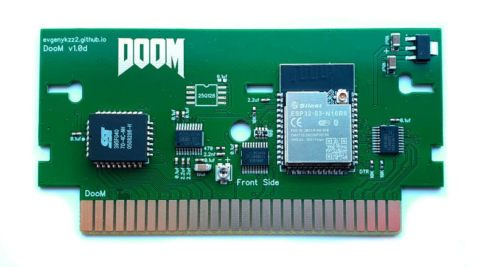
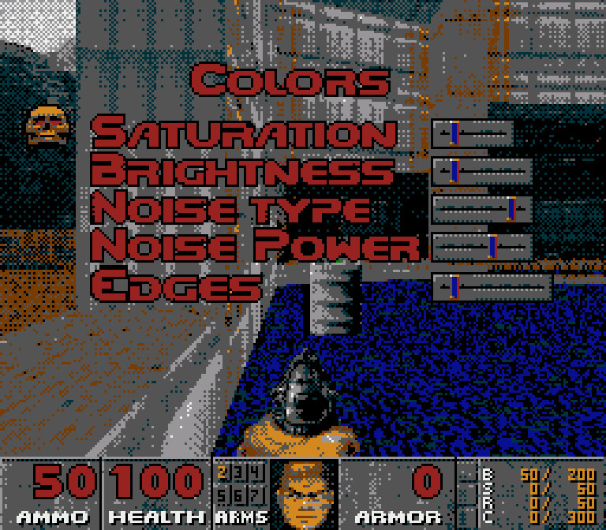

FamiDoom

Нарешті це трапилось. Справжній, оригінальний Doom 1993 року на Денді.
Так, це не перший "порт" на Nes/Famicom, думаю всі бачили на youtube реалізацію на Raspberry Pi Zero.
Цей проєкт був разроблений мною з нуля, збірка базується на https://github.com/chocolate-doom/chocolate-doom.
Не перший прототип:
Як воно працює?
Якщо бути кратким - у картриджі стоїть мікропроцессор ESP32S3, який заміняє собою відео памьять та CIRAM. Та дінамічно генерує відео кадр - CHR та Nametable.
У PGM памьяті розташовується программа, яка синхронізує ESP32S3, зчитує керування та передає на мікроконтроллер.
Данні гри зберігаються у вбудуваній памьяті ESP32S3.
Але, незважаючи на усю потужність мікроконтреллера, апаратні обмеження Famicom подолати неможливо.
Розмір екрану - 256х224
FPS - 35
Кількість кольорів - 10
Audio - mono 24Khz
Також залишається обмеження - 4 коліра на блок 8х1.

Нічого не вирізано?
Орігінальний Doom працює виключно у режимі 320х200. Тому прийшлось переробити ігрову панель.
Деякі надписи не влізали на екран, та шріфт після конвертації до 10 кольорів виглядав зовсім погано.
Задля економії памьяті було залучено ZIP стискання, що дозволило зжати ресурси до 4МБ.
Налаштування зображення є?
Я додав спеціальний пункт меню в опціях - Colors.

Saturation - насиченість. Сірий стає білим, темно сірий - чорним.

Brightness - яскравість. Усі кольри світлішають. Домомогає бачити у темряві.

Noise type - тип шуму. Шум дозволяє імітувати напівтони. 4 варінти - без шуму, два варіанти BlueNoise, та BayerNoise.
Noise power- потужність шуму.
А як там музика та звуки?
На цьому питанні проєкт дуже на довго призупинився.
По перше - музика у MID форматі, по друге - необхідність використання зовнішній DAC чіпу.
OPL потребує дуже багато ресурсів, оригінальний код виконувався 100-200мс для генераціі 20мс аудіо. Прийшлося вирізати стерео, оптимізувати код, та зменьшити частоту дискретизації до 24Кгц.
Після всього вдалося повністю відтворити оригінальну музику та звуки на ESP32S3. Синтезатор звуку Famicom не задіян.
Також на платі є потенціометр для налаштування гучності. На деяких консолях може бути затихо та шумно, а на деяких загучно та звук буде різатися.
Яке керування?
Щоб відкрити вбудовану підказву - оберіть у меню "Read This".
Хрестовина - ходити та крутитися.
Select - відкрити та біг (зажати Select).
Start - меню.
В - постріл.
А - режим приставного шагу, якщо зажати - то по натисканню "Ліворуч" та "Праворуч" гравець не буде кружитись, а рухатись.
Select+B - наступне озброення.
Select+А - попередне озброення.
Select+Start - відкрити мапу.
На яких консолях працює?
Я тестував на багатьох Денді клонах, на Famicom, AvFamicom, Nes, NesPal. На усіх працює.
На перщому екрані по запуску відіброжається тип консолі. Це може бути Famicom, Dendy, NesPal.
Мікроконтрелер ESP32S3 використовує цю інформацію, бо на різних "регіонах" різний таймінг.
На Dendy, Pal більше часу на VBlank, тому старт гри, збереження, завантаження працює швидше.
Так це можна зберігатись?
Так, збереження працюють як на оригіналі. Для прискорення збереження екран гасне на секунду.
Збереження записуються на внутрюшню флеш памьять, так-що можна продовжити грати у будь який час.
Яка версія Doom?
Перша, із трьома епізодами. Думаю із часом інші частини адаптую.
Так, вже хочу
Зв'язатися зі мною можна по Viber, Telegram, Телефон +380992028599 Кузнєцов Євген
Відправлення: Нова Пошта/Укрпошта.